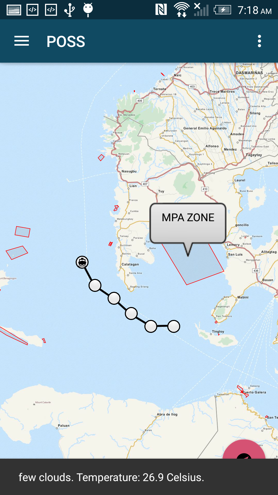
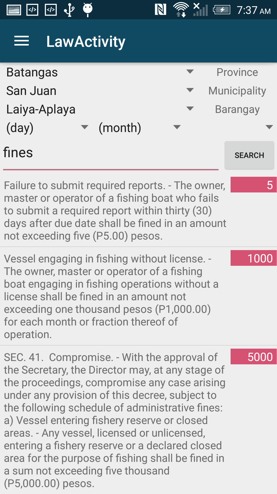
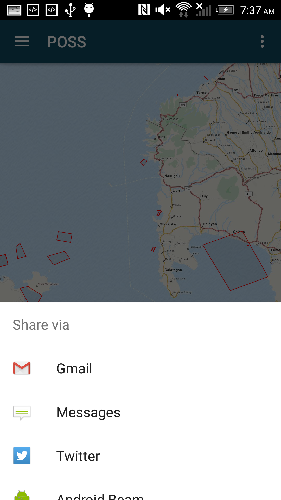

POSS was a project conceived, undertaken, and for the most part completed over the span of 24 hours at the 2016 Fishackathon. The problem was this: fishing in the Philippines, despite making up a majority of its economic income, is highly unregulated. The lack of regulation on fishing there makes it a no-man's land for fishing, which in turn takes a heavy toll on the marine ecosystem. With there being a need for a solution that would easily provide access to fishing rules, restricted fishing zones, and other information that would be relevant for the fishing life in the Philippines, we decided to fill it with POSS - the one stop shop, the end-all, the swiss army knife.
The main screen of the app. On the bottom, weather!
Our first goal was accessibility - the app needed to be easy to use, regardless of background. So we made our main activity a map. Using OpenStreetMaps (as none of us were Google developers with access to their locked up Maps API), we cached an offline map of the entire Philippines. The first thing that one sees on opening the app is this map, centered on their location (provided it is available). On the map, known MPA protected zones are displayed so that one can see if they are in a restricted area. As soon as internet connection is available, the weather, and any imminent changes to it, are displayed at the bottom as a Snackbar. On the bottom right, the user is able to start a trip, upon which the app will track and plot changes to the user's location over time.
Our second goal was knowledge (not the Tai Lopez kind). User's needed easy access to fishing laws, especially those that were pertinent to their current area. Using an SQLite3 database that contained rules, along with the barangays (a denomination of area) in which they were in effect, one could easily filter through the rules that pertained to them. In fact, the app does it automatically, filling in search filters if the GPS location is available.
With the main features done, we decided to make the app a bit social. Adding share functionality was a cinch, and soon we were able to pass around trip data via other social apps.
What's Next?
Unfortunately, we didn't win this Fishackathon (though we totally intend to next year). Instead we got beaten by a few dudes using a Google Maps template and a skeleton MEAN stack (definitely not still salty). However, we (and up till now I've been referring to a mysterious and inclusive we, so let me clarify: myself and the team with whom I worked at this Fishackathon) still hold a lot of interest in the potential of this app, and so we've decided to work on it some more this summer. Our planned features include online integration - showing other users of the app on the map, trawling for more regulation data from the Philippines (as there is currently scant available), and putting it up on the Google Play Market. Stay tuned! Alternatively, you can view the project on github here!